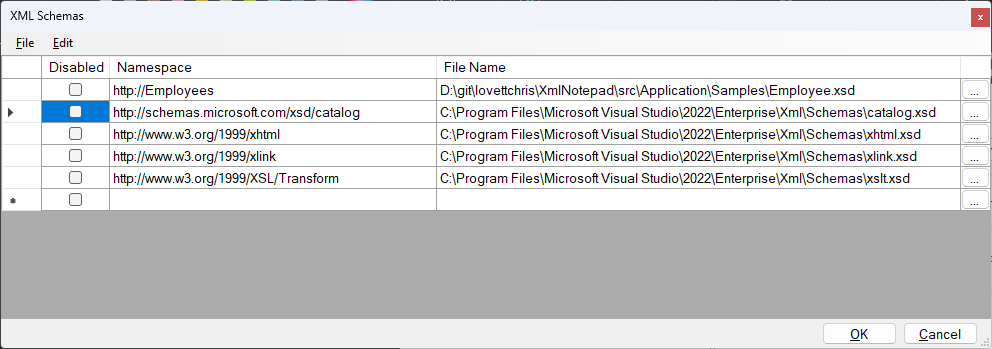

Schemas#
The "Schemas..." item under the View Menu brings up the following dialog showing the current set of known XML schemas. These schemas are used for Validation and Intellisense.

You can click the browse buttons on the right-hand side to bring up the Open File Dialog to browse for new files, or you can select the "Add Files" item in the File Menu to add a batch of schemas. You can click the column headings to sort by that column.
The first column contains checkboxes, which can be used to temporarily disable a schema from being used in validation.
This list of schemas is persisted in the XmlNotepad.settings file, so it is remembered the next time you load XML Notepad.
When you add schemas this way you can create a new document and when you add a new root element you should see some intellisense showing possible root elements and when you select from the dropdown the new element is associated with the correct namespace so that intellisense continues from there.
You can also select a row in this dialog and choose File/Generate XML Instance to get a new document that contains
a template containing all required elements from the associated schema. If there is more than one top level element
in the schema a menu will appear from which you can select the element you would like to start with.
See demo video.